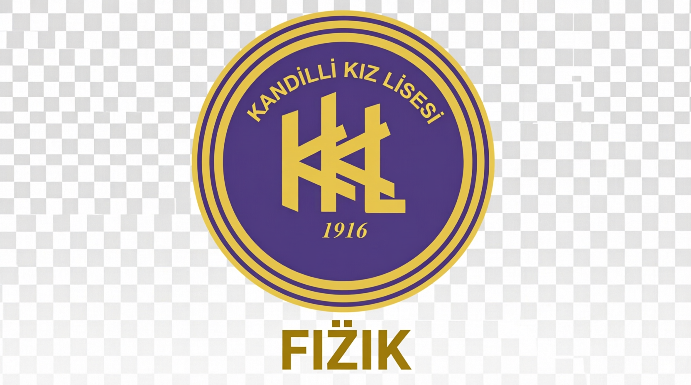

Kandilli Kız Lisesi Fizik Bölümü
Öğretmen Yönetim Paneli
Giriş
Kandilli Kız Lisesi Fizik Kontrol Masası
🔄 Yenile
🚪 Çıkış
Şube:
Tümü
12-A
12-B
12-C
12-F
0
Aktif Öğrenci
0
Toplam Kayıt
0
Çözülen Soru
0
Toplam Dakika
%0
Ort. Başarı
📊 Şube Karşılaştırması
Öğrenci Tablosu
(Detay: satıra tıkla | Sil: butona tıkla)
Kod
Şube
Kayıt
Soru
Süre
Başarı
Son Net
İşlem
AYT Fizik
TYT Fizik
✕ Kapat
🤖 Yapay Zeka Raporu Oluştur
Yapay zeka öğrenci verilerini analiz ediyor...
📝 Gelişim Raporu (Düzenleyip Gönderebilirsiniz)
📤 Öğrenciye Gönder
📋 Kopyala